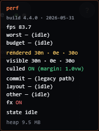

ספרינט אבחון. בלי קוד-תיקון. רק להצביע על האשם, ולתת לך לאשר.
ארבע תוצאות null אומרות דבר אחד: ניחשנו. אז עצרתי לנחש. עשיתי code audit (חיפוש בקוד עצמו) ובניתי שני מכשירי-מדידה. שלושתם מצביעים על אותו מקום: לא ה-paint של התוכן, אלא הבנייה-מחדש של כל ה-DOM בכל frame של תנועה.
ה-render() קורע ובונה מחדש את כל ה-#cv וה-#canvasOverlay — 60 פעמים בשנייה תוך כדי pan. הדפדפן חייב לפרוס (layout) ולצייר את כל העץ החדש בכל frame.
| ספרינט | מה ניסינו | תוצאה | אז זה לא… |
|---|---|---|---|
| 4 | tile-cache לרקע | null | הרקע |
| 4.1 | culling לצמתים מחוץ למסך | null | מספר אלמנטים מחוץ למסך |
| 4.2 | --no-fx מכבה filters | null | ה-filters |
| 4.3 | צמתים פשוטים בתנועה | null | מורכבות התוכן |
אם אפילו עיגול פשוט בכל frame הוא 6fps — הבעיה היא לא מה מציירים, אלא שבונים מחדש את הכל כל frame.
חיפשתי בקוד getBoundingClientRect / getBBox / getCTM ב-edge-v2.js, cull-v1.js, freeze-pan.js — אפס תוצאות. הקשתות והקיפול מחושבים מהמודל (node.x / node.y), לא מקריאת מסך. אז הם לא גורמים reflow. הניחוש הזה היה שגוי.
CanvasTransform.commit() (ב-transform.js) קורא ל-render() בכל frame של pan. ו-render() עושה cv.innerHTML = … + canvasOverlay.innerHTML = … + משנה viewBox/width/height — מאפס, כל frame. זה מאלץ את הדפדפן לפרוס ולצייר עץ-DOM חדש לגמרי 60 פעמים בשנייה. זה מה שאף ספרינט לא נגע בו — כולם שינו את התוכן של הבנייה-מחדש, אף אחד לא ביטל את הבנייה-מחדש עצמה.

עד עכשיו קראנו לפער "paint" — וזה היה שם שגוי. עכשיו אני מודד את ה-reflow ישירות (ב-transform.js, אחרי כל render). ה-HUD מראה layout (ה-reflow) ו-other (paint+composite). אם layout הוא המספר הגדול בזמן pan — הוכח: זה reflow מהבנייה-מחדש, לא ציור.
בזמן תנועה, הדגל הזה גורם ל-render() לדלג על הבנייה-מחדש לגמרי ורק להזיז את השכבות הקיימות עם CSS transform אחד. שום דבר לא נבנה מחדש. זה מבודד את השאלה: אם --static-pan מהיר — הבנייה-מחדש הייתה הבעיה.
| מה תראה | המסקנה | 4.5 יהיה |
|---|---|---|
| layout גדול (אדום) ב-א', ו-fps קופץ ל-50+ ב-ב' | אישור: הבנייה-מחדש כל frame = הבעיה | להפוך את static-pan לקבוע: להזיז בזמן pan, לבנות מחדש רק בעצירה |
| layout קטן, או fps נשאר ~6 גם ב-ב' | זה ה-compositing של השכבה הווקטורית עצמה | חזרה ל-trace; כנראה צריך לצייר ל-bitmap אמיתי (עם ספרייה, או renderer חדש) |
Safari → Develop → [iPad] → Web Inspector → לשונית Timeline → הקלט → עשה pan 5 שניות → עצור. תגיד לי איזה פס הכי גדול: Layout (סגול) או Paint (ירוק), והאם מופיעה אזהרת "Forced synchronous layout". זה מאשר את אותו דבר ישירות. אבל שורת ה-layout ב-HUD כבר נותנת את התשובה בלי כבל.
6 בדיקות חדשות (sprint4_4_fixup.spec.ts) עוברות על שני המנועים: דגלים, גרסה 4.4.0, שורות layout/other, ו---static-pan שמדלג על הבנייה-מחדש (הוכחה: סימן שהושתל בצומת שורד את ה-render בזמן תנועה, ונמחק בלעדיו). החבילה המלאה עברה: 658 בדיקות (329 לכל מנוע) — אפס כשלים. כל הקוד מאחורי דגלים כבויים.
פתח את שני הקישורים, עשה pan, תחזיר לי: (1) מה layout מראה בקישור א', (2) מה fps מראה בקישור ב'. שני המספרים האלה סוגרים את האבחון — ואז 4.5 כותב את התיקון האמיתי (להזיז בזמן pan, לבנות מחדש רק בעצירה). לא כותב שום תיקון לפני שהמספרים בידיים.
ה-desktop אף פעם לא שחזר את זה (הוא מהיר מספיק לבלוע את ה-reflow). ה-iPad שלך הוא המדידה.